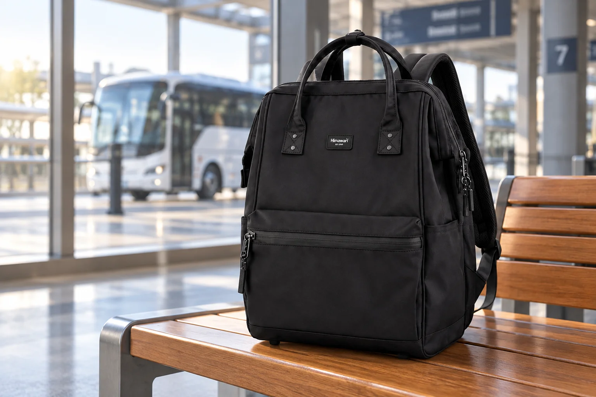

시외버스 짐은 탑승할 때와 내릴 때를 나누어 준비하기

시외버스 여행의 짐은 한 번에 모두 꺼내 쓰지 않습니다. 터미널에서는 승차 정보를 확인하고, 차 안에서는 읽을 것이나 개인 소품을 쓰며, 목적지에서는 맡겼던 짐까지 회수해야 할 수 있습니다. 같은 가방에서도 열어볼 묶음을 장면별로 나누면 좌석에서 전체 짐을 펼치는 일이 줄어듭니다. 여행 준비는 먼저 예매한 노선과 운행사의 안내를 읽는 데서 시작합니다.
출발 시각과 승차 위치, 좌석을 확인하고 표를 어떤 방식으로 보여줄지 알아봅니다. 휴대전화에서 확인하는 방식이면 실제로 예매 내역을 열어보세요. 종이표를 쓰는 경우에는 다른 서류와 섞이지 않게 둘 곳을 정합니다. 사용할 표를 찾기 위해 지갑과 여러 종이를 모두 꺼내는 배치라면 출발 전에 순서를 바꿀 수 있습니다.
차 안에서 열 묶음만 따로
탑승 중 쓸 물건을 실제 일정에 맞춰 고릅니다. 책이나 이어폰, 티슈를 쓸 계획이라면 그 조합을 함께 두어봅니다. 무엇을 가져가도 되는지와 차량에서 어떻게 보관할지는 운행사의 안내에 따릅니다. 늘 출퇴근 때 가져가던 물건을 모두 같은 용도로 쓴다고 생각하지 않고, 이동 시간 동안 필요한 것과 목적지에서 쓸 것을 나눕니다.
작은 묶음은 꺼낸 뒤 돌아갈 자리도 정합니다. 이어폰 케이스를 좌석 주변에 따로 두고 기기만 손에 남기면 하차 때 두 위치를 확인해야 합니다. 빈 케이스를 원래 묶음 안에 두는 방법도 있습니다. 사용한 물건이 다시 모일 곳을 유지하면 주변에 흩어진 소지품을 기억으로만 찾지 않아도 됩니다.
승차한 뒤에는 가방을 둘 곳을 현장 안내에 맞춰 고릅니다. 통로나 출입구가 막히지 않아야 하고 다른 좌석을 개인 짐의 자리로 쓰지 않습니다. 안내된 수납 위치에 맞지 않는다면 억지로 밀어 넣기보다 직원에게 확인합니다. 가방을 내려놓을 때는 긴 끈이 어디에 놓이는지도 보고 필요한 물건을 꺼낼 순서를 정합니다.
이 글에 소개한 Himawari No.1884 제품 정보는 여행에도 사용할 가방을 살펴볼 자료입니다. 평소 업무 가방을 그대로 가져간다면 오늘 차 안에서 열 물건만 먼저 골라보세요. 목적지에서 쓸 자료나 기기를 매번 함께 꺼내지 않는 배치가 가능한지 실제 짐을 놓고 생각합니다. 차량의 반입과 보관 기준은 예매한 운행사의 안내로 확인합니다.

휴게소에서는 복귀할 기준부터
휴게소에 정차하는 일정이라면 현장의 안내를 듣고 복귀 시각과 다시 탈 위치를 확인합니다. 과거 여행에서 기억한 정차 시간을 이번에도 적용하지 않습니다. 차량의 표시나 주차 위치처럼 본인이 다시 알아볼 단서를 남길 수 있습니다. 같은 모양의 버스가 여러 대 있으면 출발 전에 어떤 차량으로 돌아올지 확인해야 합니다.
잠깐 내릴 때는 가지고 가야 할 소지품을 정합니다. 나머지 짐을 어떻게 둘지는 운행사 안내를 따르고, 보관 책임이 확인되지 않은 상태로 귀중품을 두지 않습니다. 짧은 정차 동안 가방 전체를 정리하기보다 필요한 묶음을 챙겨 이동합니다. 새 물건을 샀다면 손에 늘어난 짐이 있는지 보고 다시 탑승할 준비를 합니다.
복귀할 때는 처음에 확인한 차량과 안내된 위치를 대조합니다. 자리에 앉은 뒤에는 꺼낸 물건이 어디에 있는지 다시 모아두세요. 승차 확인에 필요했던 표나 개인 소품을 새로 산 물건의 포장과 섞지 않습니다. 먹을 것의 반입이나 취식은 해당 안내에 맞춰 하고, 모든 차량에서 같은 방식이 가능하다고 생각하지 않습니다.
내리기 전에 몸에서 떨어진 물건
목적지가 가까워지면 사용 중이던 개인 소품을 정리합니다. 손에 들었던 책뿐 아니라 좌석 주변에 둔 케이스나 연결선도 확인합니다. 전자기기는 사용하는 기기의 이동·보관 안내에 맞춰 마치고 선을 정리하세요. 통로나 옆자리까지 연결선이 넘어간 상태로 일어나지 않고, 주변을 보고 가방을 닫습니다.
확인할 위치는 실제로 물건을 두었던 순서대로 정해볼 수 있습니다. 좌석 주변, 발밑, 이용한 보관 공간처럼 장소를 짚습니다. 보관 공간의 짐은 차량이 완전히 멈추고 현장 안내가 허용하는 때에 회수합니다. 한 물건을 꺼냈다고 다른 묶음도 함께 돌아왔다고 생각하지 않습니다. 밖에 맡긴 짐이 있다면 하차 후 자신의 물건인지 대조합니다.
하차한 뒤 바로 다음 교통수단으로 옮겨 타더라도 짐 수를 한 번 봅니다. 출발할 때 없던 봉투나 따로 들었던 케이스가 생겼을 수 있습니다. 개인 가방과 맡겼던 짐을 같이 놓고 무엇을 들고 이동할지 정합니다. 급하게 정리하다 다음 승차 정보를 놓치지 않도록 잠시 멈출 수 있는 자리에서 확인하세요.
예매한 목적지가 중간 하차 지점이라면 어느 곳에서 내리는지 받은 안내를 다시 봅니다. 같은 지역 이름만 기억하지 않고 실제 도착 지점과 그 뒤의 이동을 확인하세요. 차 안에서 쓰는 묶음을 정리한 뒤 내릴 준비를 해야 하므로, 하차 안내를 놓쳤을 때 누구에게 확인할지도 알아둡니다. 모든 버스가 같은 순서로 정차한다고 생각하지 않습니다.
다음 버스 여행을 준비할 때에는 이번에 차 안에서 실제로 쓴 묶음을 참고할 수 있습니다. 가져갔지만 꺼내지 않은 물건을 빼야 한다는 규칙은 없지만 목적지용 짐과 구분할 이유는 분명해집니다. 좌석에서 사용한 소품이 원래 묶음으로 돌아오고, 하차 때 확인할 위치가 몇 곳인지 알아볼 수 있는 구성으로 정리해봅니다.